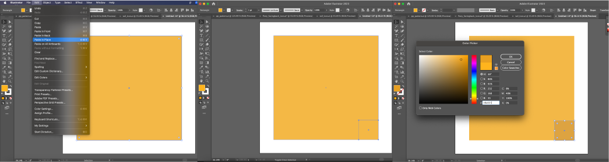

How To Make:
Simple Sticky Note in Adobe Illustrator

3. then select the color you want your sticky note to be, I selected #ffb41d an orange yellow color.
4. then hit Command c/Control c (for PC) on the square and then go back to edit and click paste in place, to duplicate the square.
5. Then while still having your top square selected, click on it's top left corner and while holding shift down, scale down the square to about 1/8 of the size it was.
6. While your smaller square is still selected, change it's color to one shade darker than it was before.